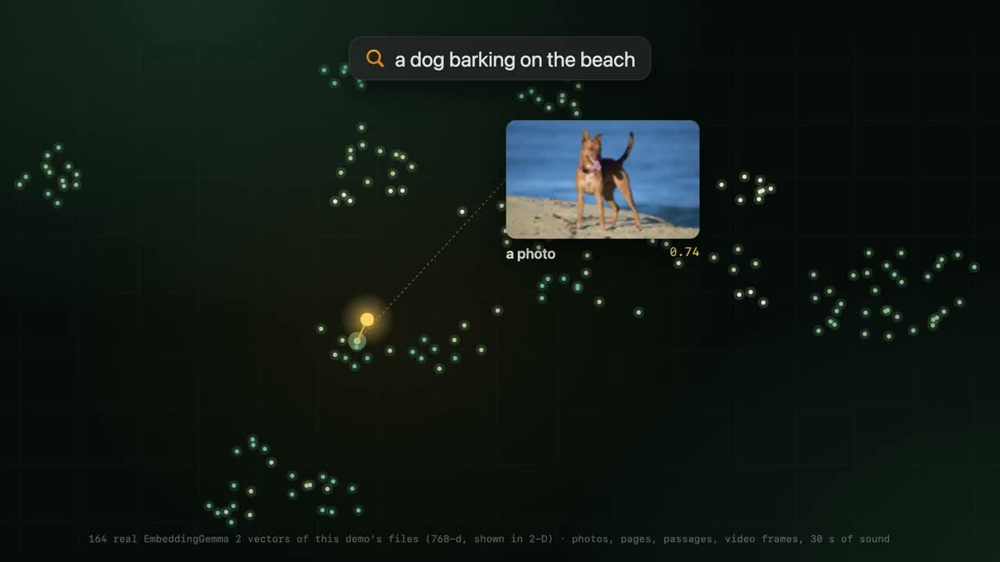
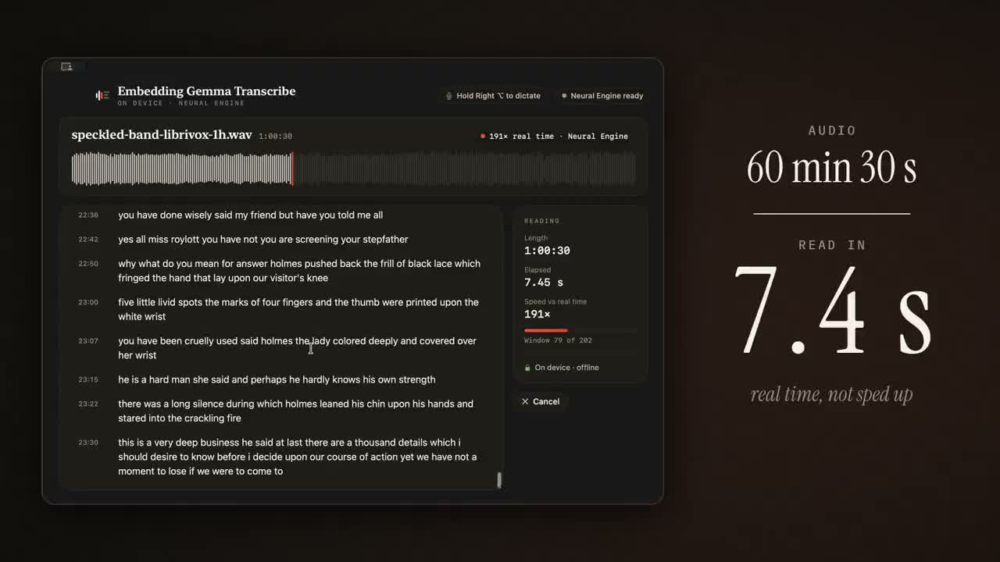

CLIP ADDENDUM · DIGUP
Can we find the moment, not just the file?
AUTHOR DEMO · DigUp · 10 October 2026

Video unavailable here. Use the original X demo link above.
What do you remember?
zebra in a video
Open the matching moment.
where they talk about sleep
Open the audio segment.
the clause about pets in the lease
Open the PDF page.
DigUp turns a shared embedding space into local file search.
Teaching notes & sources
Play Abdur Rahim’s 60-second demo first. Ask: what must be stored to jump to the right moment? These are the developer’s example queries, not results reproduced in class. The app is a native Apple Silicon Mac application using llama.cpp and Metal, not WebGPU. Our browser lab is a separate implementation of related ideas.
CLIP connected image and text representations. EmbeddingGemma 2 also supports audio and video inputs; it is a different pretrained model, not an extra modality added to our CLIP checkpoint.
CLIP ADDENDUM · DIGUP
The index stores pieces, vectors and locations
SOURCE-GROUNDED SCHEMATIC · vectors are not model outputs shown here
pool → project → normalize
SQLite index
| Piece | Vector | Location |
|---|---|---|
| video frame | [… 768 values …] | file + time |
| PDF page | [… 768 values …] | file + page |
| audio window | [… 768 values …] | file + time |
An embedding says what a piece is about. Its metadata says where it came from.
Teaching notes & sources
Diagram is a simplified source-grounded view. DigUp stores L2-normalized 768-dimensional vectors as float16 in SQLite, along with segment kind and location. Photos use visual content; screenshots also get OCR for keyword search. PDFs can supply page images and text passages. Audio uses overlapping 30-second windows; video uses sparse frames, shot selection and audio windows.
Indexing runs the pretrained model; it does not train it on your folder. Files must be indexed before semantic search can retrieve them. The app incrementally handles changes. A miss may be caused by unreadable or unsampled content, not just the embedding.
CLIP ADDENDUM · PRACTICAL BUILD
Build once: extract → encode → save
TEACHING IMPLEMENTATION · extraction and media encoding are explicit adapter steps
pieces = extract(files) # text/pages/frames/audio
X = encode_pieces(pieces) # (N, 768)
X = unit_rows(X) # norm 1 per row
np.save("vectors.npy", X)
save_json("locations.json", locations)One row of metadata per vector
{"file": "lecture.pdf",
"page": 42,
"piece_id": "lecture-page-42",
"model": "google/embeddinggemma-2",
"revision": "PINNED_REVISION"}Keep row order identical in the vector file and metadata file.
Start with NumPy + JSON. A database becomes useful as the collection grows.
Teaching notes & sources
This is a teaching skeleton, not DigUp source. extract, encode_pieces and save_json are application functions: extraction supplies text passages, decoded images, audio windows or video frames; encoding calls the model’s modality-specific adapter. They are named abstractions, not claimed library APIs. Cache model revision, preprocessing settings and an input-content hash so changed content can be re-embedded. Metadata values above are illustrative.
For text, the official model card uses SentenceTransformer("google/embeddinggemma-2"), model.encode(documents, prompt_name="Document", normalize_embeddings=True). Queries use SearchQuery. Images/audio are sent through their media input paths without text task prefixes. Use the same model, revision, dimensions and compatible preprocessing for index and query. See PRACTICAL.md for a concrete text-only index script and the contract for adding other modalities.
CLIP ADDENDUM · DIGUP
The dot product you already know does the search
ILLUSTRATIVE · 3D unit vectors for arithmetic; DigUp uses 768D
zebra in a video→ text encoder → normalizeq = [0.6, 0.8, 0]
| Stored piece | coordinate 1 | coordinate 2 | coordinate 3 | q · v |
|---|---|---|---|---|
| wildlife.mp4 · 00:24 | 0.8 | 0.6 | 0 | 0.96 |
| lease.pdf · page 2 | 0 | 0.6 | 0.8 | 0.48 |
| notes.txt · passage 3 | 0 | 0 | 1 | 0.00 |
0.6 × 0.8 + 0.8 × 0.6 + 0 × 0 = 0.96
In the app: an N × 768 matrix times a 768-dimensional query → N cosine scores.
The file vectors are already stored. Only the new query needs encoding.
Teaching notes & sources
Every number and filename on this slide is illustrative. All four displayed vectors have norm 1. Multiplication is the same as CLIP’s unit-vector comparison, now over stored pieces. The real app uses 768 dimensions and scores the stored matrix in blocks. These three toy cosine scores are not DigUp’s final ranking scores: the next slide adds its documented calibration, keyword matching and file grouping. A cosine is a similarity score, not a probability.
CLIP ADDENDUM · DIGUP
Meaning helps. Exact words still matter.
IMPLEMENTATION DETAIL · DigUp revision f9b8106 · no measured ranking shown
Find the invoice containing 4815162342
Semantic route
Calibrate across modalities;
keep each file’s best segment.
Word route
An embedding need not preserve
every digit of an invoice number.
DigUp combines learned similarity with ordinary search rules.
Teaching notes & sources
The pinned Searcher.swift computes cosine similarity, subtracts modality means and divides centered scores by a shared scale with a floor. It selects the best semantic segment per file. FTS5 searches file/folder names, document text and OCR. Files qualify through semantic salience or enough query-word coverage.
For ordinary non-code queries, score = max(z,0) + 2 × coverage^1.5 + a file-kind bonus when applicable. Lookup-like queries halve the semantic weight and double the word weight; code uses a smaller word weight. This is a concise description of that revision, not a universal formula for embedding search. Exact IDs and dates are useful tests of the lexical route.
CLIP ADDENDUM · PRACTICAL BUILD
At query time: encode → score → look up the source
TEACHING IMPLEMENTATION · semantic lookup baseline, before hybrid ranking
X = np.load("vectors.npy") # (N, 768), already normalized
q = encode_query(question) # (768,)
q = q / np.linalg.norm(q)
scores = X @ q # (N,), one cosine per piece
best = np.argsort(-scores)[:5]
for row in best:
print(scores[row], locations[row])For a small course collection, exact matrix multiplication is enough to begin.
Teaching notes & sources
This is the semantic baseline. The query helper in the companion script calls the official SearchQuery prompt. Keep raw cosine scores; they are not confidence probabilities. A production system can add DigUp’s lexical index, calibration and file grouping. For larger corpora, an approximate-nearest-neighbor index trades some recall for search cost, but it is unnecessary for the first small example.
Check whether the correct source is in the top five for questions you wrote before tuning. Include keyword-sensitive examples and unanswerable questions. A stored location must be valid even if its semantic score is high. The companion script runs on text pieces; a media extractor must be implemented before claiming this searches an arbitrary folder.
CLIP ADDENDUM · DIGUP
A search result needs a route back to its source
SCHEMATIC · example queries from the project; course exercise is an analogy
pets in the leasePDF page / text passagePDF page
zebra in a videosampled video frametimestamp
code: retry with backoffsource-code segmentfile + line
Try this with our slides: query → ranked excerpts → lecture + slide link.
Open the course-search lab
Retrieval returns evidence you can inspect. A generated answer would be an extra step.
Teaching notes & sources
These are schematic routes based on documented DigUp behavior. Source-code search is opt-in and has its own index; explicit identifier queries also use definition lookup. Semantic matches generally open the best segment; exact word hits may determine a more precise location. Sparse video frames can miss a brief event; index completeness and source metadata are part of retrieval quality.
Class question: if we change a lecture slide, what must be refreshed? Answer: its extracted content and embedding, while preserving the correct lecture/slide link. Our existing course-search lab illustrates the same pattern; it is a separate app, not a DigUp integration. No generative answer model is needed to show cited excerpts.
CLIP ADDENDUM · SPEECH FROM EMBEDDINGS
Can an embedding model help transcribe speech?
AUTHOR DEMO · 12 October 2026 · benchmark not independently reproduced

Video unavailable here. Use the original X demo link above.
AUTHOR-REPORTED
~13 sto process 1 hour of audio
base M3 MacBook Air
5.18%word error rate
LibriSpeech test-clean
EmbeddingGemma stays frozen.
A separate reader is trained.
A shared space is useful, but a transcript still needs a sequence of word decisions.
Teaching notes & sources
Play Shahir’s 26-second video. The project site reports 12.6 seconds and calls it 288× real time; rounded figures need not divide to that exact factor, so this slide uses “about 13 seconds.” These are the developer’s measurements, not a course benchmark. Author replies report 5.18% WER on LibriSpeech test-clean and about 11.5–11.8% on the harder test set. The app uses the Apple Neural Engine and is not a WebGPU demo.
Ask whether finding a recording “about sleep” is enough to recover its exact words. Retrieval can tolerate paraphrase; transcription must preserve lexical detail and time order.
CLIP ADDENDUM · SPEECH FROM EMBEDDINGS
Keep the audio order; learn how to read it
SOURCE-GROUNDED SCHEMATIC · internal layers and slice timing not disclosed
frozen
A single pooled vector is useful for retrieval.
Exact words require decisions across time.
The author describes a reader over audio slices, not inversion of one whole-recording vector.
Teaching notes & sources
The public description says the audio encoder is unchanged, a small reader maps short audio slices into the model’s text space, nearest words are selected, and a tiny model adds punctuation/capitalization. This is a high-level diagram of those stated components. The exact slice duration, reader layers, alignment procedure and training loss are not specified in the public notes inspected on 13 October 2026.
Do not infer that an arbitrary 768-dimensional pooled embedding uniquely determines a transcript. Similar meanings can have different wording. We do not label this reader as CTC or an autoregressive decoder without implementation evidence.
CLIP ADDENDUM · SPEECH FROM EMBEDDINGS
Compare a reader output with candidate words
ILLUSTRATIVE · 2D arithmetic, invented vectors; exact lookup metric not disclosed
| Candidate | Toy word vector | Illustrative cosine r · ew |
|---|---|---|
| cat | [0.8, 0.6] | 0.6 × 0.8 + 0.8 × 0.6 = 0.96 |
| cap | [1, 0] | 0.60 |
| dog | [−0.6, −0.8] | −1.00 |
arg maxw (r · ew) → cat → assemble words over time → punctuation
The comparison looks familiar. The learned reader makes it useful for recognizing words.
Teaching notes & sources
All 2D vectors, word scores and the winning word on this slide are invented for teaching. Every vector is unit length, so a dot product equals cosine. The documented project selects the nearest of about 229,000 English words in the model’s text space. The exact distance function is not publicly specified; cosine/argmax here illustrates nearest-vector lookup, not a reproduced implementation or output.
The table contains candidate word representations, not the token-embedding matrix of a language model. The public notes do not specify how repeated slice predictions are aligned or merged. A tiny additional model restores punctuation and capitals.
CLIP ADDENDUM · PRACTICAL BUILD
First build a small, labelled word-recognition task
PROPOSED TEACHING DATASET · not a reconstruction of the author’s training corpus
INPUT
A short audio clip
mono · 16 kHz
one spoken command
TARGET
“yes”
integer label: 0
one label per clip
Speech Commands v0.02: use yes, no, up, down, left, right, stop, go.
Use the official train / validation / test lists; keep speakers separate.
Cache an N × 768 feature matrix and N integer labels for each split.
This is an eight-word teaching experiment. It is not yet full speech-to-text.
Teaching notes & sources
Proposed reproducible teaching dataset, not the dataset claimed for Shahir’s reader. Speech Commands v0.02 contains short labelled spoken-word WAVs. Select the eight named word directories and retain the official validation/testing lists; other eligible files are training data. The speaker identifier before _nohash_ enables an explicit leakage check. Clips may be shorter than one second: preprocess consistently as mono 16 kHz and keep a record of any padding. Do not mix cropped portions of one recording across splits.
Compute one native 768D normalized EmbeddingGemma 2 output for each clip, with the model frozen. These semantic embeddings may lose phonetic distinctions, so success is an experiment to measure, not a promised result. Eight-way word accuracy is the appropriate first metric; it is not sentence-level WER.
CLIP ADDENDUM · PRACTICAL BUILD
A 768-dimensional vector is 768 input features
PROPOSED TEACHING READER · 768 → 128 → 768; not the published app’s architecture
R Eᵀ / τ → B × 8 word scores
E stores eight frozen text vectors: 8 × 768. Here τ = 0.1 is a chosen hyperparameter.
Train the small mapping. Keep the embedding model and candidate word vectors fixed.
Teaching notes & sources
Architecture chosen for this classroom experiment: Linear(768,128), ReLU, Linear(128,768), then L2 normalization. B is minibatch size. Each input coordinate is one feature; the drawing shows only three neurons from each layer and marks the omitted ones. The two linear layers have 197,504 trainable parameters including biases. Candidate words are encoded with the frozen text branch using a consistent Classification prompt and normalized. The matrix E is held fixed.
Multiplying normalized reader outputs by E transpose supplies cosine-based logits, divided by a positive temperature. A simpler Linear(768,8) classifier is also a valid baseline. This slide intentionally illustrates a text-vector readout to connect to CLIP and the author’s nearest-word idea. The author’s actual reader input dimensions and layers are not disclosed.
CLIP ADDENDUM · PRACTICAL BUILD
The correct word supplies the training target
ILLUSTRATIVE PROBABILITIES · chosen training objective for our small experiment
Audio says “yes” → target y = 0
| Candidate word | yes | no | up |
|---|---|---|---|
| Illustrative softmax share | 0.70 | 0.20 | 0.10 |
L = − log p(correct word) = − log 0.70 ≈ 0.357
Average this loss over the minibatch, update the reader, then evaluate on held-out speakers.
Teaching notes & sources
Three candidate words are shown only to make the arithmetic small; the proposed experiment has eight. Probabilities are illustrative and do not come from a trained model. With logits S = normalize(reader(X)) Eᵀ / tau and labels y, use cross_entropy(S, y). PyTorch performs log-softmax internally, so do not pass already-softmaxed probabilities to cross_entropy. The default mean reduction averages the minibatch.
This cross-entropy is our explicitly chosen word-classification objective. It is not claimed to be Shahir’s unpublished reader loss. Only reader parameters are in the optimizer. For head-only training, cached embeddings detach the base model entirely. Finetuning the encoder instead requires audio inputs, gradients through the model, a new optimizer scope, and rebuilding any affected index.
CLIP ADDENDUM · PRACTICAL BUILD
The training step fits on one slide
TEACHING CODE · cached real features required; model training results are not claimed
reader = nn.Sequential(nn.Linear(768, 128), nn.ReLU(),
nn.Linear(128, 768))
optimizer = torch.optim.AdamW(reader.parameters(), lr=1e-3)
for X, y in loader: # (B, 768), (B,)
R = F.normalize(reader(X), dim=-1) # (B, 768)
logits = R @ E.T / 0.1 # E: (8, 768); logits: (B, 8)
loss = F.cross_entropy(logits, y) # mean across the minibatch
optimizer.zero_grad()
loss.backward()
optimizer.step()X is a cached embedding batch. y is a batch of word labels. E is a frozen word-vector table.
Teaching notes & sources
Imports, validated cache loading, shuffling, epochs and validation are in code/train_reader.py. The code is a teaching reader, not the speech app’s source. The runnable companion reports validation accuracy and selects the best validation epoch; test evaluation is separate. It accepts actual cached 768D features and does not generate fake embeddings if the cache is absent. The shape-and-gradient check uses random tensors and does not measure model quality.
Compare this reader with the zero-shot baseline X Eᵀ on the same held-out speakers. Better training loss alone is insufficient. The proposed learning rate, hidden width and temperature are starting choices to tune only on validation data.
CLIP ADDENDUM · PRACTICAL BUILD
Full transcription adds an alignment problem
PRACTICAL NEXT STEP · proposed route to ASR; author’s exact training recipe is not public
INPUT
An entire utterance
many words, different durations
TARGET
“please turn left”
an ordered sequence of words
A practical dataset
LibriSpeech: paired English speech and transcripts.
Start with train-clean-100.
An extra design decision
Keep time-indexed features.
Learn alignment, or obtain word timings before training.
Validate on dev-clean; reserve test-clean / test-other for final WER.
Keyword accuracy does not establish sentence transcription quality.
One pooled 768D vector per recording does not preserve a usable word-by-word timeline.
Teaching notes & sources
LibriSpeech is a proposed next dataset, not a verified training source for Shahir’s model. It provides 16 kHz read English audio and transcripts under CC BY 4.0. The author names only openly licensed English speech and reports LibriSpeech evaluation. Do not convert that evaluation fact into a claim about their training corpus.
Two practical designs: keep a temporal feature sequence and train with an alignment-aware sequence objective such as CTC; or obtain word timings using an external forced aligner, train on aligned segments, and design segmentation/merging for inference. These are proposed options, not claims about the original implementation. A faithful reproduction would require the reader architecture, feature tap, objective, corpus, vocabulary and decoding details from the author. Score final transcripts by WER and measure end-to-end runtime on the same recordings.
CLIP ADDENDUM · SPEECH FROM EMBEDDINGS
The embedding model is reused; the reader learns a new job
AUTHOR METHOD · high-level training view; no invented loss or reproduced benchmark
DIGUP
Encode files → store vectors
→ retrieve a source location
SPEECH DEMO
Audio features → trained reader
→ word sequence
What would you test next? Names, accents, noise and long recordings.
Shared representations enable new applications. The task still determines the readout and the evaluation.
Teaching notes & sources
The author reports training the reader in under two hours on eight H100 GPUs using openly licensed English speech; fast on-device inference does not mean this training ran on the laptop. The pretrained embedding model was not originally trained as this speech recognizer. The public method leaves the exact objective unspecified, so the diagram intentionally shows only the supported direction of learning.
Evaluate transcription using WER = (substitutions + deletions + insertions) / reference words, and runtime on the same audio and hardware. A good retrieval result and a good transcript require different evidence. The author acknowledges higher errors on their own speech. Download links lead to independent third-party Mac apps; the lecture itself does not install anything.